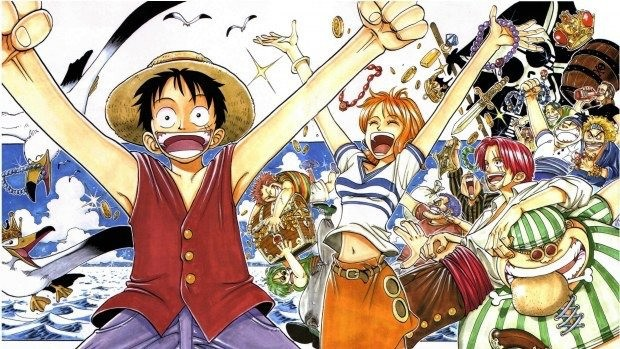

Exibição:
1999-2001

Saga East Blue
A Saga East Blue[1] (“東の海” 編 "Īsuto Burū" Hen?) é a saga introdutória da série. Monkey D. Luffy encontra Shanks quando ainda era menino novo que vive em East Blue. Este é o lugar onde ele recruta maior parte de sua tripulação e, em última instância, onde a aventura começa. Esta saga é composta de seis arcos de história.
A saga começa com um flashback da execução de Gol D. Roger. Antes de morrer, ele diz as multidões para saírem e procurarem o seu tesouro. Isso provocou a Era de Ouro da Pirataria em que incontáveis piratas levantaram suas bandeiras e partiram para encontrar o One Piece.